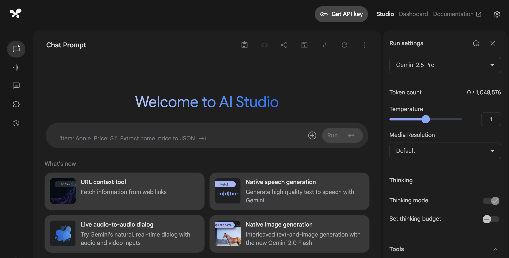
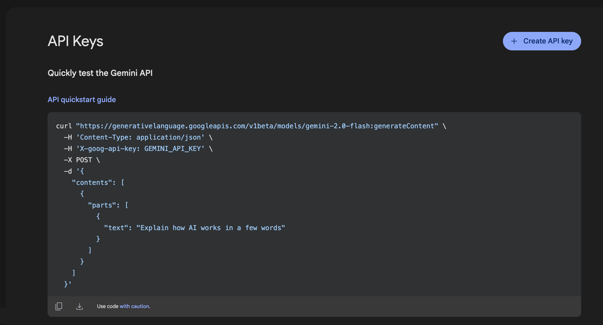
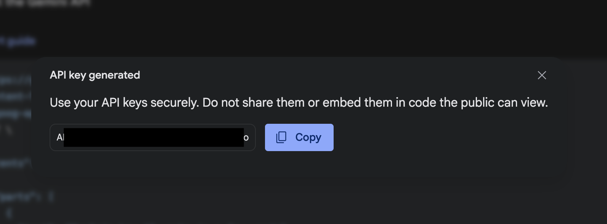
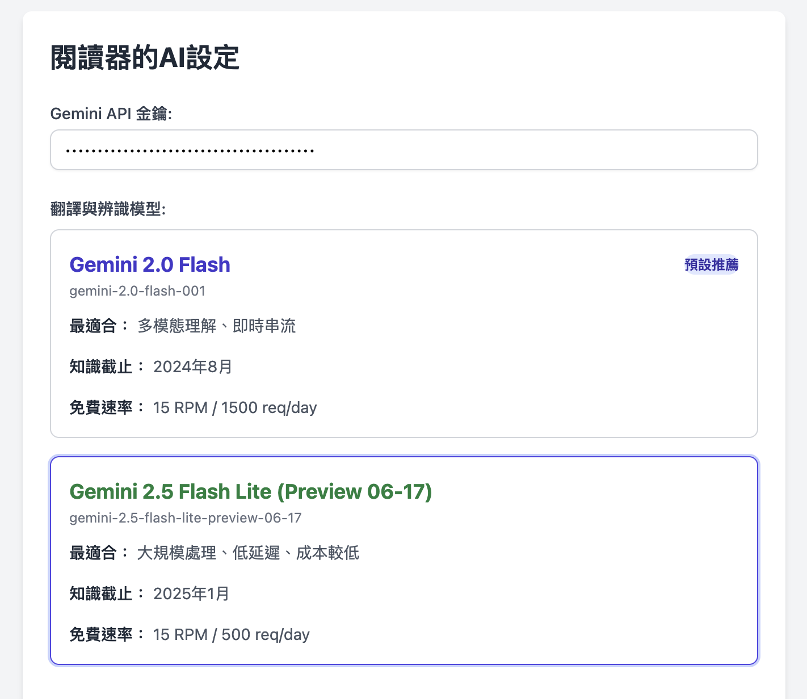

Foreword
"Incognito PrivoAI" provides powerful translation and recognition features by connecting to Google's Gemini AI model. To ensure your data security and privacy, the tool requires you to use your own API key. The following steps will guide you through the free application process.
前言
「PrivoAI 無痕AI工作台」透過串接 Google 的 Gemini AI 模型來提供強大的翻譯與辨識功能。為了確保您的資料安全與隱私，本工具需要您使用自己的 API 金鑰。以下將引導您完成免費申請流程。
Go directly to the API Key page
Click the button below to open the Google AI Studio API key page directly. You will be asked to sign in with your Google account if you haven't already.
直接前往 API 金鑰頁面
點擊下方按鈕，直接開啟 Google AI Studio 的 API 金鑰頁面。若尚未登入，系統會提示您使用 Google 帳號登入。
Open Google AI Studio API Key Page
Create a New API Key
On the API key management page, click the blue "Create API key" button. In the dialog that appears, select "Create in new project" (this is usually the easiest option for first-time users).
建立新的 API 金鑰
在 API 金鑰管理頁面，點擊藍色的 「Create API key」 按鈕。在彈出的對話框中，選擇 「Create in new project」（這對首次使用者來說通常是最簡單的選項）。

Copy Your API Key
Your new API key will be displayed on the screen — it starts with AIza and is about 40 characters long. Click the copy icon next to the key to copy it to your clipboard. Keep this key safe and never share it publicly.
複製您的 API 金鑰
您的新 API 金鑰將顯示在畫面上 — 以 AIza 開頭，約 40 個字元。點擊金鑰旁邊的複製圖示，將它複製到剪貼簿。請妥善保管此金鑰，絕對不要公開分享。

Paste into Extension Settings
Return to Chrome. Right-click the Incognito PrivoAI extension icon and select "Options". Paste the key you just copied into the "Gemini API Key" field and click "Save Settings".
You're all set! All AI features are now ready to use.
貼到擴充功能設定中
回到 Chrome，在 PrivoAI 擴充功能圖示上按右鍵，選擇「選項」。將剛剛複製的金鑰貼到 「Gemini API 金鑰」 欄位，並點擊「儲存設定」。
設定完成！所有 AI 功能現在都可以使用了。

Important Security Notice
Your API key is like a key to your house. Never share it with anyone or post it on any public website (such as GitHub or forums) to prevent unauthorized use and unexpected charges.
重要安全性提醒
您的 API 金鑰就如同您家裡的鑰匙，請絕對不要將它分享給任何人，或張貼在任何公開的網站（如 GitHub、論壇）上，以免被盜用並產生非預期的費用。
Optional: Use a Local AI Model (No API Key Needed)
If you have Ollama or LM Studio installed, you can use a local AI model instead of Gemini — no API key required. Go to Options → Local AI Model section to configure the endpoint URL and model name.
選配：使用本機 AI 模型（無需 API 金鑰）
如果您已安裝 Ollama 或 LM Studio，可以不需要 API 金鑰，直接使用本機 AI 模型。前往「選項 → 本機 AI 模型」區塊，填入端點 URL 與模型名稱即可啟用。